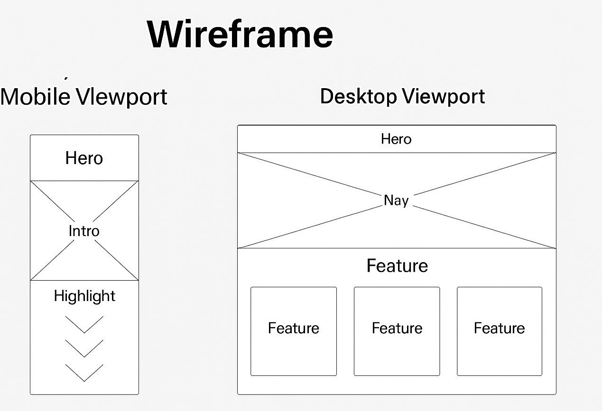

Site Name
ROMIRA GLOBAL | Crochet Business Toolkit
This name reflects my registered company in Angola, focused on empowering artisans with high‑quality crochet supplies and digital tools.
Domain: romiraglobal.com (hypothetical global reach)
Site Purpose
The purpose of this site is to introduce ROMIRA GLOBAL crochet business supplies. It helps artisans track inventory, estimate project costs, generate receipts, and share the cultural story behind the craft.
Scenarios (Crochet Supplies FAQ)
- How can I track yarn usage across multiple projects?
- Can I estimate the cost of a custom crochet item before I start?
- What is the best way to manage hook and accessory inventory?
- How do I apply discounts to customer orders?
- Can I test the supplies before using them for real transactions?
Color Scheme
| Color Name | Hex Code | Usage |
|---|---|---|
| White | #FFFFFF | Background |
| Deep Wine | #6B2737 | Headings & Table headers |
| Deep Wine | #6B2737 | Section borders |
| Light Wine | #A44A5E | Links & highlights |
Typography
Headings: Montserrat Bold
Body: Roboto Regular
Code Snippets: Fira Code
Wireframe (Home Page)
Mobile layout: Stacked hero, intro, and highlights
Desktop layout: Full‑width hero, top navigation, and three‑column grid for features
Planned Pages
- index.html | Home
- features.html | Function breakdown and modules
- about.html | Step‑by‑step guide
- devnotes.html | Developer story
- contact.html | Feedback and inquiries